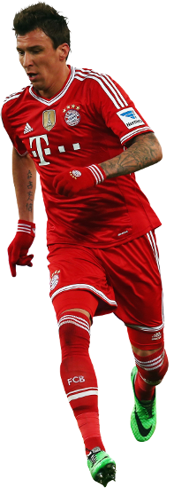

Čuvate svoju intimu kao zmija noge, i vrlo ste uspješni u tome. Možete li nam ipak otkriti neku rutinu svoje svakodnevice?
Moja intima ne bi više bila intima kada bih je dijelio s medijima. Općenito ne razumijem zašto bi nekome bilo tako važno da zna sve o mojem privatnom životu, umjesto da ključnim bude ono što radim kao igrač na terenu. Volim svoj mir, u domu sa svojom Ivanom i okruženju bliskih mi ljudi.
Postoji li neki planetarno slavan sportaš koji vas inspirira?
Puno je velikana sporta u svijetu da bi samo jedan stršio. Od svih se tih fenomena može nešto naučiti i pronaći inspirativni model.
Žilav ste tip, ne volite baš jesti?
Ma tko kaže, pa ja sam Slavonac, haha... Naravno da volim roštiljati, volim kulen, ali iznad svega sada moram biti odgovoran prema svom poslu, svom tijelu i poslodavcima. Kad jednom prestanem igrati, vjerojatno ću nadoknađivati gušte...
Kako prolazi svakodnevica nogometaša Mandžukića izvan treninga?
Mogu kazati da je slična drugima koji vole sport. Pratim NFL, NBA, teniske turnire, obožavam gledati prijenose naših sportskih momčadi i pojedinaca, rukomet, tenis, košarka, skijanja, gdje god su naši, tu sam okom i ja. Jako volim hrvatske sportaše i jako sam sretan što se primijeti da među nama vlada veliko poštovanje i uzajamna podrška.
Mario Mandžukić je nogomet počeo igrati sa šest godina u Ditzingenu u Njemačkoj, gdje je živio do desete godine, a onda je stigao u Slavonski Brod i priključio se Marsoniji. Tamo se zadržao do 2005. uz godinu dana boravka u brodskom Željezničaru.
Klasu je pokazao u NK Zagrebu, gdje je u dvije godine izazvao interes Dinama i otišao u Maksimir za milijun i pol eura. Prvi inozemni transfer bio mu je onaj u Wolfsburg 2010. za sedam milijuna eura, a nakon dvije godine odlazi u Bayern.
U Bavarskoj je ostvario najveće uspjehe, osvojivši dvije duple krune uz Ligu prvaka i postigavši gol u finalu protiv Borussije Dortmund, ali i Svjetsko klupsko prvenstvo, UEFA-in superkup i njemački superkup.
Zatim je otišao u Atletico, koji ga je platio 22 milijuna eura. U Madridu se zadržao samo godinu dana i otišao u Juventus, gdje je kao igrač ostavio najdublji trag.
Četverogodišnje razdoblje sa 162 utakmice, uvjerljivo najviše u bilo kojem klubu, okrunio je s 44 gola i 17 asistencija. Postao je miljenik navijača, a onda ga se Maurizio Sarri odrekao i, nakon veličanstvenog uspjeha s Hrvatskom na Mundijalu u Rusiji, otišao je u katarski Al Duhail.
Kad je vidio da to nije ono što je očekivao, nakon svega sedam utakmica, prihvatio je poziv velikog Milana koji mu je bio zadnji klub u čudesnoj karijeri.
Odigrao je 426 profesionalnih utakmica i zabio 166 golova za klubove, imao je 89 nastupa i postigao 33 gola za A reprezentaciju Hrvatske, među kojima i onaj najvažniji: Englezima u produžecima za finale Svjetskog prvenstva.
